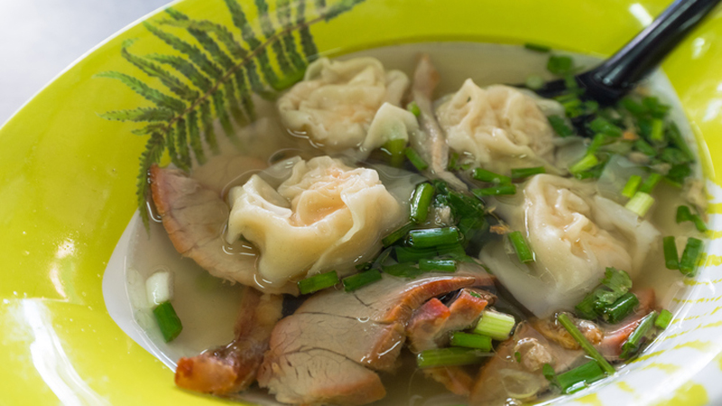

“ใครว่าเกี๊ยวน้ำรสชาติจืดชืดจ๊ะ รสชาติกลมกล่อมขนาดนี้ วันไหนอยากแซ่บก็แค่เติมพริกป่นลงไป” ช่วงนี้อินกับละครเรื่อง เมีย 2018 เกินเหตุไปหน่อย อินจัดจนต้องลุกมาฝึกทำเกี๊ยวน้ำเอาใจสามีกันสักหน่อยแล้ว
ส่วนผสม
•แผ่นเกี๊ยวสำหรับห่อ
•หมูบด 200 กรัม
•กุ้ง 100 กรัม
•ต้นหอมซอย
•ซอสถั่วเหลือง
•น้ำมันหอย 1 1/2 ช้อนชา
•น้ำตาลทราย 1/2 ช้อนชา
•น้ำมันงา 1/2 ช้อนชา
ส่วนผสมน้ำซุป
•น้ำซุปกระดูกหมู
•ต้นหอม
•ผักกวางตุ้ง
วิธีการทำ
1.หมักเนื้อหมูด้วยซอสถั่วเหลือง น้ำมันหอย น้ำตาลทราย พริกขาวป่น และน้ำมันงา แล้วนวดโดยใช้เวลา 5 นาที เพื่อให้หมูนั้นเนื้อเหนียวนุ่ม
2.ใส่ต้นหอมลงไป แล้วตามด้วยเนื้อกุ้ง จะใส่เป็นตัว หรือหั่นเป็นชิ้นก็ได้ตามชอบ จากนั้นก็นำไปแช่ตู้เย็น 2 ชั่วโมง หรือแช่ทิ้งไว้ข้ามคืน
3.ระหว่างนั้นให้ต้มน้ำซุปกระดูก ใส่ผักกวางตุ้ง และต้นหอมเตรียมรอไว้ก่อนเลย
4.นำไส้เกี๊ยวออกมาจากตู้เย็น จากนั้นก็เตรียมแผ่นเกี๊ยว ตักไส้ลงตรงกลางแผ่นเกี๊ยว เอานิ้วจิ้มน้ำแล้วทาไปรอบๆ ของขอบแผ่นเกี๊ยว จากนั้นก็พับลงมา ห่อให้มิด ไม่ไส้ข้างในหลุดออกมาได้
5.ตั้งหม้อต้มสำหรับเกี๊ยว ตั้งน้ำให้เดือด จากนั้นก็นำเกี๊ยวลงไปลวกให้สุก ใส่ลงไปทีละตัว กันเกี๊ยวไม่ให้ติดกัน
6.ช้อนเกี๊ยวที่สุกแล้วใส่ชาม จากนั้นก็ตักน้ำซุปกระดูกที่เตรียมไว้เทราดลงไป เสิร์ฟพร้อมเครื่องปรุงก๋วยเตี๋ยวได้เลยค่ะ
ขอขอบคุณข้อมูลและภาพประกอบจาก
เว็บไซต์:https://food.mthai.com/baby/132678.html
Copyright © EAT&EAT nc. สงวนลิขสิทธิ์